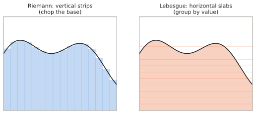
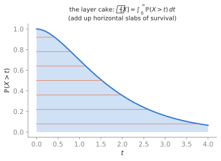
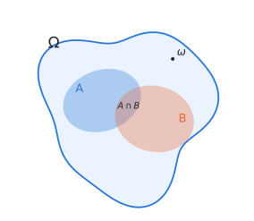
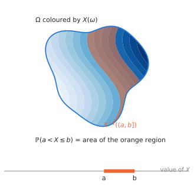
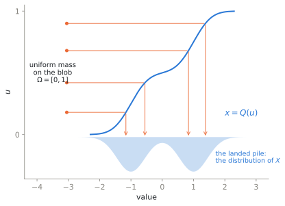
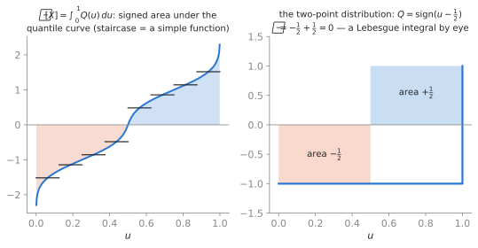

Measuring Things — From Length to Probability
An Advanced tutorial, and the first of two on the measure-theoretic view of probability. It assumes no exposure to measure theory and is self-contained. The story: how we measure length, area, and volume; why the Riemann integral is the wrong tool for probability; how Lebesgue’s rearrangement fixes it; and how Kolmogorov used the resulting theory of measure to give probability a rigorous foundation. The sequel, Joint, Marginal, Conditional — and Bayes, builds the multivariate picture on this footing.
Nothing in the lectures or the other tutorials depends on this pair. The working versions of everything here are in Probability & Random Variables and Distributions and Maximum Likelihood, and you can follow the whole course from those. Read this track when you want to know why the working versions are allowed — or when a formula has surprised you and you want the footing that explains it.
Every object in this course — density, likelihood, score, KL divergence, pushforward, transport map — is a measure-theoretic object. One can use them by rote, and for the lectures that is enough. But the moment a formula surprises you (why is \(P(X = x) = 0\) for every \(x\) yet the density is positive? what does \(\mathbb{E}[x_0 \mid x_t]\) actually average over? why does adding noise make the score exist?), the only reliable footing is the measure-theoretic one. This tutorial builds that footing visually, with almost no machinery.
1. How do we measure things?
Start with questions a ruler can answer.
- Length. The interval \([a, b]\) has length \(b - a\). If a set is a finite or countable disjoint union of intervals, its length is the sum of the pieces. (The qualifier is not fussiness: \([0,1]\) is an uncountable disjoint union of single points, each of length zero.)
- Area. A rectangle has area width \(\times\) height. For a curved region, we tile it with many small rectangles and add; as the tiles shrink, the sum converges to what we call the area.
- Volume. Same idea, one dimension up: boxes, then sums of boxes, then limits.
In each case the procedure is identical. Fix a set \(\Omega\) and a family \(\mathcal{F}\) of subsets of it — the sets we are willing to size, about which more in a moment. A measure is a rule \(m : \mathcal{F} \to [0, \infty]\) such that
- \(m(\varnothing) = 0\) — the empty set has measure zero. (Note the direction: plenty of non-empty sets are also null, as §2’s rationals will show.)
- countable additivity — if \(A_1, A_2, \dots \in \mathcal{F}\) are pairwise disjoint, then \(m\!\big(\bigcup_{i=1}^{\infty} A_i\big) = \sum_{i=1}^{\infty} m(A_i)\): the whole is the sum of its disjoint parts, countably many at a time.
Three details in that sentence are load-bearing and easy to skim past. The domain is \(\mathcal{F}\), not every subset. The value \(+\infty\) is allowed, which is what lets length and volume work on unbounded spaces. And the additivity is countable, not merely finite — the difference is the whole content of the letter \(\sigma\), and §“What is not a \(\sigma\)-algebra” shows a family where exactly that difference bites.
Length, area, volume, mass, and — this is the punchline of the tutorial — probability are all instances of this one definition. Probability will simply be a measure whose total is \(1\).
But there is a catch, and it is not pedantry. Once \(\Omega\) is uncountable (an interval, the plane, the space of images), one can construct subsets that ordinary length cannot size — not because no measure whatever could, but because no countably additive, translation-invariant extension of length reaches them.1 Note the shape of the failure: it is the measure that cannot be extended, not the family that fails to be a \(\sigma\)-algebra — a distinction §“What is not a \(\sigma\)-algebra” returns to. The resolution is not to fix the rule but to restrict the questions: we measure only a well-behaved family of sets, closed under the operations we need (complements, countable unions). That family is called a \(\sigma\)-algebra, and every set in it is called measurable. This single concession — not every subset gets a size — is the entire entrance fee of measure theory. Everything else is payoff.
2. Two ways to integrate: strips versus slabs
An integral is a measured total: the area under a curve, the average of a quantity, the expected value of a random variable. There are two ways to organize the computation, and the difference between them is the difference between nineteenth-century and twentieth-century analysis.

Riemann (strips). Chop the domain (the \(x\)-axis) into small intervals; on each, approximate \(f\) by a constant; add up rectangle areas; refine. This works beautifully when \(f\) is continuous — nearby \(x\)’s have nearby \(f(x)\)’s, so the rectangles hug the curve.
Lebesgue (slabs). Chop the range (the \(y\)-axis) into small levels; for each level \(y\), ask how much of the domain is mapped near \(y\) — that is, measure the set \(\{x : f(x) \approx y\}\); multiply level by measure; add; refine. Lebesgue’s own summary: to count coins, Riemann takes them in the order they sit on the table; Lebesgue first sorts them by denomination, then counts each pile.
Why bother with the second way?
- It tolerates wild functions. The indicator of the rationals on \([0,1]\) (\(1\) on rationals, \(0\) on irrationals) breaks Riemann completely — every strip contains both values. Lebesgue shrugs: the set of rationals has measure \(0\), the set of irrationals has measure \(1\), so the integral is \(1 \cdot 0 + 0 \cdot 1 = 0\).
- It only needs a measure. The slab computation never uses the geometry of the domain — only the ability to measure sets like \(\{x: f(x) > y\}\). So the same definition of integral works when the domain is an interval, a plane, a space of images, or an abstract sample space with a probability on it. This is exactly the generality probability needs.
- It has the strong limit theorems. Interchanging limits and integrals — the daily bread of this course, every time we differentiate a loss under an expectation — is licensed by Lebesgue’s convergence theorems, not Riemann’s.
The layer-cake picture makes the definition concrete for a non-negative \(f\): the region under the graph is a stack of horizontal slabs, the slab at height \(y\) has width \(m(\{x: f(x) > y\})\), and
\[ \int f \, dm \;=\; \int_0^\infty m\big(\{x : f(x) > y\}\big)\, dy . \]

An integral is a measure-weighted sum of values. Riemann organizes the sum by where you are (domain strips); Lebesgue organizes it by what value you see (range slabs). The Lebesgue organization needs nothing from the domain except a measure — which is precisely why probability, whose domains are abstract sample spaces, is built on it.
3. Kolmogorov’s move: probability is a measure
Before 1933 probability had results in abundance — Borel, Lebesgue, Markov and others had already built much of the machinery — but no agreed definition of its basic objects. Kolmogorov’s Grundbegriffe (1933) unified that work into the standard framework with a single identification: a probability space is a measure space \((\Omega, \mathcal{F}, P)\) where
- \(\Omega\) is the sample space — the set of all outcomes of the experiment;
- \(\mathcal{F}\) is a \(\sigma\)-algebra of subsets of \(\Omega\) — the events, the questions we are allowed to ask;
- \(P\) is a measure on \(\mathcal{F}\) with \(P(\Omega) = 1\) — the probability measure, total mass one.
That is the entire definition. The axioms you may have met as a list (non-negativity, total mass one, additivity) are just the definition of a measure with the normalization \(P(\Omega)=1\); every rule of probability (\(P(A^c) = 1 - P(A)\), inclusion–exclusion, the continuity of \(P\) along monotone sequences of events) is a theorem about measures.
Kolmogorov’s axioms say how probability behaves, deliberately not what it means. The meaning question predates the axioms and has never had a unanimous answer; three readings are worth knowing.
- Frequentist. \(P(A)\) is the long-run frequency of occurrence of \(A\) in independent repetitions of the experiment — the fraction of tosses that land heads, in the limit. This grounds probability in data but struggles with single-case events (“the probability this specific bridge fails”).
- Fiducial (Fisher). Not a reading of what probability is so much as an inferential programme, but worth knowing: an attempt to obtain a probability statement about an unknown parameter without assuming a prior, by inverting a sampling or pivotal relation between the data and the parameter. (Not, as is sometimes said, by reading it off the likelihood alone.) Historically influential, foundationally contested, and a standing reminder that not every “probability of a parameter” one writes down is licensed by the axioms.
- Measure-theoretic (the course’s working stance). Probability is a normalized measure; full stop. Whether a given application reads it as a frequency, a degree of belief, or a modeling fiction is a question outside the mathematics. This agnosticism is a feature: the same theorems serve every interpretation.
The axioms capture the behavior all readings agree on — which is exactly why the theory could finally be built.
Two examples calibrate the definition.
- A die. \(\Omega = \{1,\dots,6\}\), \(\mathcal{F}\) = all subsets, \(P(A) = |A|/6\). Here every subset is an event, which is why elementary probability never mentions \(\mathcal{F}\) — though note this is a choice: finite spaces admit coarse \(\sigma\)-algebras too, and §4 will use one.
- A uniform point in \([0,1]\). \(\Omega = [0,1]\), \(\mathcal{F}\) = the Borel sets (the \(\sigma\)-algebra generated by intervals), \(P\) = length. Now \(P(\{\omega\}) = 0\) for every single outcome, yet \(P([0,1]) = 1\): probability lives on sets, not points. The common puzzles of continuous probability — density values above \(1\), zero-probability events that nonetheless happen — dissolve once probability is read as measure, i.e. as generalized length.
4. The blob: seeing \((\Omega, \mathcal{F}, P)\)
From here on, picture \(\Omega\) as a blob of clay of total mass \(1\). Events are regions of the blob; \(P\) weighs regions; the \(\sigma\)-algebra is the list of regions we can weigh.

Two jobs, and two pictures
The \(\sigma\)-algebra is the object students never get a picture of, and most of the confusion comes from the definition being asked to do two different jobs. Separate them first.
- The bookkeeping job. The big \(\mathcal{F}\) in the triple says which sets \(P\) is even defined on, and which maps count as measurable. §1 forced the issue: ordinary length cannot reach every subset. In practice \(\mathcal{F}\) is a conventional ambient choice — Borel on \(\mathbb{R}\), the product \(\sigma\)-algebra on sequences, cylinder sets on path space — made once and then kept in the background. (There is no canonical largest safe choice: on \([0,1]\) we use the Borel sets even though length extends perfectly well to the larger Lebesgue family.) This job needs no picture; it needs the fence, and then silence.
- The information job. A sub-\(\sigma\)-algebra \(\mathcal{G} \subseteq \mathcal{F}\) models something else entirely: partial knowledge. Not what is weighable in principle, but what a particular observer can tell apart. This is the job that matters for the rest of the course, and this is what deserves a picture.
Two pictures of the information job follow. They are the same mathematics; use whichever makes a given statement obvious.
Picture A — a resolution
Pixelate the blob into a grid of cells and agree to describe outcomes only cell-by-cell. The events you can then express are exactly the unions of cells: a coarse grid asks coarse questions, a fine grid asks fine ones, and refining the grid enlarges the \(\sigma\)-algebra.
This picture is honest but narrow: it models a \(\sigma\)-algebra generated by a partition into finitely many positive-mass cells. Many of the \(\sigma\)-algebras in this course are not of that kind — \(\sigma(X)\) for an \(X\) with nonatomic law has no positive-mass cells at all — so read the grid as a helpful special case, never as the definition.
Picture B — a report
Here is the picture that survives the general case. You never see the outcome \(\omega\). What reaches you is a report about it — some function \(R\) evaluated at \(\omega\), and nothing else. Then
\(\sigma(R)\) is the collection of events that the report settles.
Roll a die, and suppose you are told only whether the result is odd or even. You cannot answer “was it a 3?”, because \(1\), \(3\) and \(5\) produce an identical report. You can answer “was it odd?”. Write down everything the report settles:
\[ \sigma(R) \;=\; \big\{\; \varnothing,\;\; \{1,3,5\},\;\; \{2,4,6\},\;\; \Omega \;\big\} \]
— four events, out of the \(2^6 = 64\) subsets of \(\Omega\). That list is a \(\sigma\)-algebra, and now the axioms stop looking arbitrary, because they are nothing but the logic of answerable questions:
| Axiom | What it says about a report |
|---|---|
| \(\Omega, \varnothing \in \mathcal{G}\) | “did something happen?” needs no report to answer |
| closed under complement | if the report settles \(A\), it settles “not \(A\)” — same answer, negated |
| closed under countable union | if it settles each of \(A_1, A_2, \dots\), it settles “did at least one occur?” |
This table translates the axioms into the language of questions; it does not derive them. In particular nothing in ordinary logic explains why the cutoff falls at countably many questions rather than finitely or arbitrarily many. Countable closure is an additional idealization, and it is chosen because it is exactly what limits, tail events and countably additive probability require.
Read literally, “the events the report settles” means the events whose answer is determined by \(R(\omega)\) — that is, the sets that are unions of level sets of \(R\). When \(R\) has countably many possible answers, as in every example in this tutorial and in the demo below, that collection is exactly \(\sigma(R)\) and the gloss is precise.
For a report with a continuum of answers it is too generous. Take \(R(\omega) = \omega\) on \([0,1]\): its level sets are single points, so every subset of \([0,1]\) is a union of them, and “settled” would mean all of \(2^{[0,1]}\) — which §1 has already told us is too big to carry a length. The definition that works in general keeps only the sets built from measurable questions about the answer,
\[ \sigma(R) \;=\; \big\{\, R^{-1}(B) \;:\; B \text{ Borel} \,\big\}, \]
and this is the definition to hold onto. The intuition — what the report lets you decide — survives intact; the fine print is that “decide” must itself be asked measurably. The same caveat is why measurability of \(R\) had to be assumed in the first place.
The report picture also gives the cleanest statement of measurability there is. A quantity can be computed by an observer who sees only the report exactly when it is a function of the report:
\[ X \text{ is } \sigma(R)\text{-measurable} \quad\Longleftrightarrow\quad X = f \circ R \text{ for some measurable } f . \]
This is the Doob–Dynkin lemma. Precisely: let \(R : (\Omega, \mathcal{F}) \to (S, \mathcal{S})\) be measurable and let \(X\) be real-valued. Then \(X\) is \(\sigma(R)\)-measurable if and only if \(X = f \circ R\) for some \(\mathcal{S}/\mathcal{B}(\mathbb{R})\)-measurable \(f : S \to \mathbb{R}\). No probability or integrability is involved; the report just needs a measurable space to land in, and \(X\) needs real (or standard-Borel) values. Set it beside the pixel version — “\(X\) is constant on each cell” — and note that the two agree wherever both apply, but the report version keeps working when the report has a nonatomic law and there is no finite positive-mass partition to be constant on. (Continuous reports still have fibres; what they lack is fibres of positive mass.)
And when \(X\) is not a function of the report, the best an observer can do is average \(X\) over the outcomes the report fails to distinguish. For the parity report and \(X(\omega) = \omega\),
\[ \mathbb{E}[X \mid R] = \begin{cases} (1+3+5)/3 = 3 & \text{if the report says odd},\\ (2+4+6)/3 = 4 & \text{if the report says even}. \end{cases} \]
That average is conditional expectation: itself a function of the report — a \(\sigma(R)\)-measurable random variable. In general, for \(X \in L^1(P)\), \(\mathbb{E}[X \mid \mathcal{G}]\) is defined as the almost-surely unique \(\mathcal{G}\)-measurable integrable \(W\) with \(\int_A W\, dP = \int_A X\, dP\) for every \(A \in \mathcal{G}\): it has the same integral as \(X\) over every event the observer can ask about. For a partition into positive-mass cells this reduces to the cell averages above, \(W|_{C} = \int_C X\,dP / P(C)\); on null cells the definition imposes nothing, which is why “almost surely unique” is the strongest uniqueness available.
Calling it the closest such function needs a loss to be named. Under squared error, and for \(X \in L^2\), it is exactly right — \(\mathbb{E}[X \mid \mathcal{G}]\) is the orthogonal projection of \(X\) onto the \(\mathcal{G}\)-measurable functions, hence the minimum-mean-squared-error predictor. Under absolute error the best predictor is a conditional median instead. Every “best denoiser” claim in this course is the squared-error one.
In a diffusion model the report is the noisy sample \(x_t\). A denoiser is required to be a function of \(x_t\) — it is handed nothing else — and that requirement is exactly the statement that it is \(\sigma(x_t)\)-measurable. The best denoiser is then the average of the clean signals consistent with what was seen, \(\mathbb{E}[x_0 \mid x_t]\). W01’s \(\tanh\) formula is this paragraph, computed for a two-point dataset.
Act I of the demo below is Picture B, made concrete: eight students, a report you choose, and — displayed in full — the list of events that report settles, which questions it leaves open, and the conditional expectation it supports.
Interactive demo — The Measure Playground
5. Random variables: numbers painted on the blob
A random variable is not random and is not a variable. It is a function
\[ X : \Omega \longrightarrow \mathbb{R}, \]
a number painted on each point of the blob. The randomness lives entirely in \(P\); \(X\) just reads off a numerical feature of the outcome. (A random vector is the same thing with values in \(\mathbb{R}^d\) — equivalently, a map all of whose coordinates are random variables. Images will be random vectors with \(d\) in the hundreds.)
One condition is required, and the preimage picture makes it self-evident. To ask “what is the probability that \(X \le t\)?” we must weigh the set of outcomes for which that holds — the preimage \(X^{-1}((-\infty, t]) = \{\omega : X(\omega) \le t\}\). So that set had better be in \(\mathcal{F}\), i.e. weighable. A function with this property (for every \(t\)) is called measurable, and measurable function is the honest name for “random variable.”

This is the same condition as §4’s, in the form it takes for the big \(\mathcal{F}\): measurability is the demand that the questions we want to ask about \(X\) land inside the family we are allowed to weigh. Against a sub-algebra \(\sigma(R)\) it becomes the sharper statement met there — \(X\) is \(\sigma(R)\)-measurable exactly when \(X\) is a function of the report — and when it is not, what remains is the average \(\mathbb{E}[X \mid R]\) over outcomes the report cannot separate. Act I of the demo is that whole progression: pick a coarse report and \(X\) is invisible behind its box averages; pick the finest and \(X\) is exactly recovered.
6. A gallery: probability spaces, fully specified
Everything so far has been definitions. Here are seven spaces written out in the same four lines each — sample space, \(\sigma\)-algebra, probability measure, random variable — so that the abstractions have somewhere to live. Read the remarks: each example exists to make one point the others cannot.
Two warnings. A few remarks run slightly ahead of the text and use pushforward, density and expectation, which §§7–8 build properly; take them on trust for now. And “fully specified” is an aspiration for the first five: MNIST’s population reading and the path-space law are deliberately schematic, because in those cases the whole point is that we posit the measure rather than construct it.
Discrete
(1) One roll of a fair die.
- \(\Omega = \{1,2,3,4,5,6\}\).
- \(\mathcal{F} = 2^\Omega\), all \(64\) subsets.
- \(P(A) = |A|/6\).
- \(X(\omega) = \omega\), the face shown.
Remark. Every subset is an event, which is why elementary courses can omit \(\mathcal{F}\) entirely. But the coarse sub-algebras are still there and still useful: the parity report of §4 generates \(\sigma(R) = \{\varnothing, \{1,3,5\}, \{2,4,6\}, \Omega\}\), four events out of sixty-four.
(2) Flipping until the first head.
- \(\Omega = \{1, 2, 3, \dots\}\), the index of the first head. Countably infinite.
- \(\mathcal{F} = 2^\Omega\).
- \(P(\{n\}) = 2^{-n}\), which sums to \(1\) — countable additivity earning its keep.
- \(X(\omega) = \omega\), the number of flips; \(\mathbb{E}[X] = \sum_n n 2^{-n} = 2\).
Remark. For any countable \(\Omega\) you may always take \(\mathcal{F} = 2^\Omega\), every function is a random variable, and measurability is vacuous. The \(\sigma\)-algebra only begins to bite in its bookkeeping role when \(\Omega\) is uncountable — which is the next example. Its information role is alive even here: the parity report of §4 lives on a six-point space.
(3) An infinite sequence of coin flips.
- \(\Omega = \{0,1\}^{\mathbb{N}}\), all infinite binary sequences. Uncountable.
- \(\mathcal{F} = \sigma(\text{cylinder sets})\), generated by the events \(\{\omega : \omega_1 = a_1, \dots, \omega_n = a_n\}\) — the events decided by finitely many flips.
- \(P\) = the Bernoulli\((\tfrac12)\) product measure, fixed by \(P(\text{cylinder}) = 2^{-n}\).
- \(X(\omega) = \lim_{n} \frac1n \sum_{i \le n} \omega_i\) where that limit exists, and \(X(\omega) = 0\) otherwise — a genuine function on all of \(\Omega\). The strong law says \(X = \tfrac12\) almost surely; the sequences with no limiting frequency form a measurable set of probability \(0\).
Remark. Here \(\mathcal{F} \subsetneq 2^\Omega\) strictly: the product \(\sigma\)-algebra is generated by countably many cylinders and is far smaller than the set of all subsets. The natural sub-algebras \(\mathcal{F}_n = \sigma(\omega_1,\dots,\omega_n)\) — “what you know after \(n\) flips” — grow with \(n\). That increasing family is a filtration, and it is Picture B with a clock attached.
Continuous
(4) A uniform point in \([0,1]\).
- \(\Omega = [0,1]\).
- \(\mathcal{F} = \mathcal{B}([0,1])\), the Borel sets — generated by the intervals.
- \(P\) = length.
- \(X(\omega) = \omega\); or \(X = Q\), the quantile function of any target law.
Remark. \(P(\{\omega\}) = 0\) for every single \(\omega\), yet \(P(\Omega) = 1\). This is the canonical blob of §7 below: with \(X = Q\), the pushforward is any one-dimensional distribution you like.
(5) A standard Gaussian.
- \(\Omega = \mathbb{R}\).
- \(\mathcal{F} = \mathcal{B}(\mathbb{R})\).
- \(P(A) = \int_A \frac{1}{\sqrt{2\pi}} e^{-x^2/2}\,dx\).
- \(X(\omega) = \omega\).
Remark. Compare with taking \(\Omega = [0,1]\), \(P\) = length, and \(X = \Phi^{-1}\) (defined on \((0,1)\), a set of full measure, since \(\Phi^{-1}(0) = -\infty\) and \(\Phi^{-1}(1) = +\infty\); fix any value at the two endpoints). Different sample space, different measure, different function — identical distribution. No downstream calculation that depends only on the law of \(X\) can tell them apart — which is the “blob is forgettable” principle in one line. Calculations that depend on more than the law (how \(X\) is coupled to another variable, what filtration it sits in) are of course not covered; tutorial 10 makes a point of this.
Real data
(6) MNIST. Three honest set-ups, and the differences matter.
(a) The dataset itself, as a probability space.
- \(\Omega = \{1, 2, \dots, 60000\}\), the training indices.
- \(\mathcal{F} = 2^\Omega\).
- \(P(\{i\}) = 1/60000\) — draw an index uniformly.
- \(X(i) \in \{0,\dots,255\}^{784}\), the image; \(Y(i) \in \{0,\dots,9\}\), the label.
Its joint pushforward is the empirical distribution. It plays two roles at once, and they are worth separating: it is exactly the measure that ordinary empirical risk minimization integrates against, and it is an estimator of the population law in (b), in the same way that empirical risk estimates population risk. The label report \(\sigma(Y)\) contains \(2^{10} = 1024\) events, and \(\mathbb{E}[X \mid Y]\) is a genuinely familiar object: the ten class-average images, the blurry mean “\(7\)”.
(b) The population we wish we had.
- \(\Omega\) = an abstract space of handwriting events, never constructed.
- \(X : \Omega \to \mathbb{R}^{784}\) the rendering map, and \(p_{\text{data}} = X_\# P\) the thing we actually want to model.
- The \(60000\) images are modelled as i.i.d. draws from it.
We never build this \(\Omega\), and by §7 we never need to: only the pushforward enters any computation.
(c) Pixel space as the sample space. As literally stored, MNIST lives in \(\Omega = \{0,\dots,255\}^{784}\) — which is finite, with about \(10^{1888}\) elements. So \(\mathcal{F} = 2^\Omega\) is perfectly legitimate and \(p_{\text{data}}\) is an honest pmf. Modelled instead as continuous, \(\Omega = [0,1]^{784}\) with \(\mathcal{F}\) Borel, and something important changes.
Take the continuous reading, \(\Omega = \mathbb{R}^{784}\) with Lebesgue as the reference. The manifold hypothesis says \(p_{\text{data}}\) concentrates on a set of far lower dimension than \(784\) — a set of Lebesgue measure zero. A measure that puts mass \(1\) on a Lebesgue-null set is singular: by Radon–Nikodym it has no density at all. There is no function \(p_{\text{data}}(x)\) to differentiate, so the score \(\nabla_x \log p_{\text{data}}(x)\) does not exist as a function on \(\mathbb{R}^{784}\).
Now convolve with \(\mathcal{N}(0, \sigma^2 I)\) — which is precisely the forward process, \(x_\sigma = x_0 + \sigma z\). For any probability measure \(\mu\),
\[ p_\sigma(x) = \int \frac{1}{(2\pi\sigma^2)^{d/2}} e^{-\lVert x - y\rVert^2 / 2\sigma^2} \, d\mu(y) \]
is smooth and strictly positive everywhere. The blurred law is absolutely continuous no matter how singular \(\mu\) was, so it has a density, and the score exists and is smooth.
Two cases are worth separating. The empirical law — the finitely many stored images — is supported on finitely many points, hence singular in \(\mathbb{R}^{784}\) whatever one believes about manifolds; here the \(t=0\) score certainly does not exist. For the population law the conclusion needs the manifold hypothesis in its exact form, \(\mu(M) = 1\) for some lower-dimensional \(M\); the looser “on or near a manifold” version permits a full-dimensional law with a perfectly good density.
So the honest statement is: wherever \(p_0\) is singular, Gaussian corruption is what brings the object we differentiate into existence; and where \(p_0\) is already smooth and full-dimensional, the noise regularizes a score that existed but was badly behaved. Either way it explains why diffusion learns \(\nabla \log p_t\) for \(t > 0\) and never \(\nabla \log p_0\). (Stated here for the additive VE corruption \(x_\sigma = x_0 + \sigma z\); the VP convention convolves a rescaled data law and reaches the same conclusion.)
(7) A diffusion path. The course’s own probability space.
- \(\Omega = C([0,T]; \mathbb{R}^d)\), the continuous paths.
- \(\mathcal{F} = \sigma(\text{cylinder sets})\), generated by the evaluations \(\omega \mapsto \omega(t)\) — and on this space that family coincides with the Borel \(\sigma\)-algebra of the sup-norm, with rational times already sufficient to generate it.
- \(P\) = the law of the forward process (Wiener measure, for pure Brownian motion).
- \(X_t(\omega) = \omega(t)\) — each time \(t\) gives a random variable, the whole family being the process.
Remark. An outcome here is an entire trajectory, which is exactly the situation \(\sigma\)-algebras were invented for: \(\Omega\) is a function space, and “all subsets” is hopeless. The filtration \(\mathcal{F}_t = \sigma(X_s : s \le t)\) is everything known by time \(t\) — the whole history, including \(X_0\). A denoiser handed only the current noisy sample is held to something stricter: it must be \(\sigma(X_t)\)-measurable, and \(\sigma(X_t) \subseteq \mathcal{F}_t\). The distinction matters, since an \(\mathcal{F}_t\)-measurable rule would be allowed to peek at the clean signal it is supposed to be recovering.
What is not a \(\sigma\)-algebra
The axioms are easiest to feel by watching them fail. Throughout, \(\Omega = \{1,2,3,4\}\) unless stated.
| Candidate | Fails | Why |
|---|---|---|
| \(\{\varnothing, \{1\}, \Omega\}\) | complement | \(\{1\}^c = \{2,3,4\}\) is missing |
| \(\big\{\varnothing, \Omega, \{1,2\}, \{3,4\}, \{2,3\}, \{1,4\}\big\}\) | union | closed under complement, but \(\{1,2\} \cup \{2,3\} = \{1,2,3\}\) is missing |
| the partition \(\big\{\{1,2\},\{3,4\}\big\}\) alone | almost everything | no \(\varnothing\), no \(\Omega\); it generates the \(\sigma\)-algebra \(\{\varnothing,\{1,2\},\{3,4\},\Omega\}\) |
| the intervals of \(\mathbb{R}\) | both | \([0,1]^c\) is not an interval; \([0,1]\cup[2,3]\) is not an interval |
| the finite subsets of \(\mathbb{N}\) | \(\Omega\), complement, countable union | \(\mathbb{N} \notin\); \(\{1\}^c\) is infinite; \(\bigcup_n \{n\} = \mathbb{N}\) |
| the finite and cofinite subsets of \(\mathbb{N}\) | countable union | see below |
That last row is the one to remember, because it is the only one that isolates the letter \(\sigma\). Call a set cofinite if its complement is finite. The finite-or-cofinite sets are closed under complement (the two families swap) and under finite unions, so they form an algebra — everything a \(\sigma\)-algebra asks for except one word. But
\[ \{2, 4, 6, \dots\} \;=\; \{2\} \cup \{4\} \cup \{6\} \cup \cdots \]
is a countable union of finite sets that is neither finite nor cofinite (both it and its complement are infinite). So the family is an algebra and not a \(\sigma\)-algebra. What the \(\sigma\) buys is closure under countable unions, which is what keeps limits and tail events measurable in the first place. Do not confuse it with countable additivity, which is a separate axiom — one about the measure \(P\), saying how it distributes over such unions once they are known to be events.
It is tempting to conclude from §1 that \(2^\Omega\) “fails” for \(\Omega = \mathbb{R}\). It does not: \(2^\Omega\) is a \(\sigma\)-algebra for every \(\Omega\), trivially, since it contains everything. The problem is not with the family, it is with the measure. What Vitali’s construction shows is that no countably additive, translation-invariant extension of ordinary length can be defined on all of \(2^{\mathbb{R}}\). We restrict to the Borel or Lebesgue sets not because larger families break the axioms of a \(\sigma\)-algebra, but because length cannot survive on them.
Note also that a topology is not generally a \(\sigma\)-algebra — open sets are closed under arbitrary unions but not under complements — even though the Borel \(\sigma\)-algebra is the one generated by a topology.
7. Pushforward: the distribution is the image of the mass
Here is the move the whole course runs on. The map \(X\) transports the blob’s mass onto the real line: the probability that lands on a set \(B \subseteq \mathbb{R}\) is the mass of its preimage,
\[ \mu_X(B) \;=\; P\big(X^{-1}(B)\big) \;=\; P(X \in B). \]
The measure \(\mu_X\) on \(\mathbb{R}\) is called the pushforward of \(P\) under \(X\) (written \(X_\# P\)), and it is exactly what elementary courses call the distribution of \(X\). The CDF is \(F_X(t) = \mu_X((-\infty,t])\); a density is a function \(p_X\) reconstructing \(\mu_X\) by integration, \(\mu_X(B) = \int_B p_X(x)\,dx\), when such a function exists.
Two consequences, both load-bearing later:
The blob is forgettable. Any two random variables with the same pushforward are indistinguishable by probability statements about their values. This is why probability courses can work with distributions and never mention \(\Omega\) — and why we may choose \(\Omega\) freely, to be whatever is convenient.
This is the theorem behind a move Probability & Random Variables makes informally. There, the sample space for tomorrow’s temperature is described as the set of possible states of the world, and \(T \sim \mathcal{N}(\mu,\sigma^2)\) as a statement about the distribution \(T\) induces on the line — after which the “canonical shortcut” throws the possible worlds away and works on \((\mathbb{R}, \mathcal{N}, \mathrm{id})\) instead. What licenses that substitution is exactly the sentence above: the two constructions have the same pushforward, so no statement about the value of \(T\) can separate them. Note also what it does not license — two variables sharing an outcome. A coupling is more than a pair of pushforwards, which is the whole content of Joint, Marginal, Conditional.
The canonical choice is \(\Omega = [0,1]\). Take \(P\) = length on \([0,1]\) and \(X = Q\), the quantile function (inverse CDF) of any target distribution: then \(Q_\# (\text{uniform})\) is that distribution. Every 1-D distribution is the pushforward of uniform mass through its quantile map — one blob serves all.

Sampling is transport. A random draw from \(\mu\) is uniform mass on \([0,1]\) pushed through a map. Generative modeling — the subject of this course — is the same sentence in higher dimension with a learned map: push simple noise through \(G\) so that \(G_\# (\text{noise}) \approx p_{\text{data}}\). The pushforward is not a technicality; it is the course’s definition of “generate.”
8. Expectation: the Lebesgue integral, four ways
The expectation of \(X\) is its Lebesgue integral against \(P\):
\[ \mathbb{E}[X] \;=\; \int_\Omega X(\omega)\, dP(\omega). \]
Built in the standard four stages, each is a picture on the blob:
- Indicators. \(X = \mathbf{1}_A\) (paint \(1\) on region \(A\), \(0\) elsewhere): \(\mathbb{E}[\mathbf{1}_A] = P(A)\). Expectation of a yes/no question is the probability of yes. This is the hinge between measure and integral.
- Simple functions. \(X = \sum_k c_k \mathbf{1}_{A_k}\) (finitely many values, one region per value): \(\mathbb{E}[X] = \sum_k c_k P(A_k)\) — value times mass, summed. This is Lebesgue’s coin-sorting, verbatim.
- Non-negative \(X\). Approximate from below by simple functions; take the supremum. The layer-cake formula of §2 is this stage, drawn.
- General \(X\). Split \(X = X^+ - X^-\) and subtract, defined whenever \(\mathbb{E}|X| < \infty\).
And by the pushforward, the abstract integral becomes the familiar ones — this one line is why the blob never appears in computations:
\[ \mathbb{E}[X] = \int_\Omega X \, dP = \int_{\mathbb{R}} x \, d\mu_X(x) = \begin{cases} \sum_x x\, P(X = x) & \text{(discrete)}\\[2pt] \int x\, p_X(x)\, dx & \text{(density)} \end{cases} \]
There is one more home for the same number, and it is the one this course keeps returning to. Take the canonical blob \(\Omega = [0,1]\) with \(X = Q\): then
\[ \mathbb{E}[X] \;=\; \int_0^1 Q(u)\, du \;=\; \text{signed area under the quantile curve.} \]

For a two-point distribution taking values \(-1\) and \(+1\) with masses \(\pi\) and \(1-\pi\), the quantile curve is a staircase with one step, the area is two rectangles, and \(\mathbb{E}[X] = (-1)\pi + (+1)(1-\pi) = 1 - 2\pi\) — read directly off the picture. Act II of the demo animates the whole construction: the staircase (a simple function) refines, its sum converges to the exact area, and sliding \(\sigma \to 0\) morphs a smooth mixture into this staircase.
Properties, and where each one lives
With the four-stage construction in hand, the standard properties sort into two piles: those visible on the blob and those that are theorems of the limit stage.
| Property | Statement | Why |
|---|---|---|
| Linearity | \(\mathbb{E}[aX + bY] = a\mathbb{E}[X] + b\mathbb{E}[Y]\) | Obvious for simple functions (regroup regions); survives the limit. Needs no independence — the most-used, least-appreciated fact in probability. |
| Monotonicity | \(X \le Y \Rightarrow \mathbb{E}[X] \le \mathbb{E}[Y]\) | Lower paint, lower total. |
| Normalization | \(\mathbb{E}[c] = c\) | The blob has mass 1. |
| Indicator bridge | \(\mathbb{E}[\mathbf{1}_A] = P(A)\) | Definition, stage 1. |
| Null sets are invisible | \(X = Y\) except on a set of measure \(0\) \(\Rightarrow \mathbb{E}[X] = \mathbb{E}[Y]\) | Regions of mass 0 contribute value \(\times\) 0. |
| Limit interchange | \(X_n \to X\) \(\Rightarrow\) \(\mathbb{E}[X_n] \to \mathbb{E}[X]\) under conditions (monotone or dominated convergence) | The Lebesgue theory’s crown jewels; not free, and the reason the theory wins. |
The last row is the one to respect. Every “differentiate under the integral sign” and every “swap the limit and the expectation” in this course is an appeal to some theorem whose hypotheses have to be checked — often dominated convergence, but sometimes a Leibniz rule, domination of difference quotients, Fubini–Tonelli, or uniform convergence. Riemann’s theory is not without interchange theorems either (uniform convergence gives one). What Lebesgue’s theory offers is markedly more flexible hypotheses, which is why it is the one everyone reaches for.
9. The dictionary, and what comes next
| Measure theory | Probability | Picture |
|---|---|---|
| Measure space \((\Omega, \mathcal{F}, m)\) | Probability space \((\Omega, \mathcal{F}, P)\), \(P(\Omega)=1\) | Blob of clay, mass 1 |
| Measurable set | Event | Weighable region |
| \(\sigma\)-algebra | Family of askable questions | What a report settles |
| Measurable function | Random variable | Numbers painted on the blob |
| Pushforward \(X_\# P\) | Distribution of \(X\) | Mass transported to \(\mathbb{R}\) |
| Lebesgue integral \(\int X\, dP\) | Expectation \(\mathbb{E}[X]\) | Value \(\times\) mass, totaled; area under \(Q\) |
| Almost everywhere | Almost surely | Except on mass-0 dust |
| Density (Radon–Nikodym derivative) | pdf \(p_X\) | Mass per unit length |
The sequel, Joint, Marginal, Conditional — and Bayes, puts two numbers on the blob and develops joints as mountains, marginals as shadows, conditionals as renormalized slices, and Bayes’ rule as the freedom to slice in either direction — the grammar in which every diffusion-model statement (\(p(x_t \mid x_0)\), \(\mathbb{E}[x_0 \mid x_t]\), the posterior over mixture components) is written. A later installment will build likelihood, score, and KL divergence on the same footing.
Exercises
- Show from additivity alone that \(P(A \cup B) = P(A) + P(B) - P(A \cap B)\). (Cut the blob into three disjoint pieces.)
- On \(\Omega = [0,1]\) with length, compute \(\mathbb{E}[X]\) for \(X(\omega) = \mathbf{1}_{[0,1/2]}(\omega) - \mathbf{1}_{(1/2,1]}(\omega)\) twice: by stage 2 of the construction, and as an area under a staircase. Note that \(X\) itself steps \(+1\) then \(-1\) while its quantile function steps \(-1\) then \(+1\) — the two are different functions with the same integral. Why must that be so?
- The indicator of the rationals: verify that every Riemann sum on \([0,1]\) can be made \(0\) or \(1\) by choice of sample points, while the Lebesgue integral is \(0\). Which axiom of the measure makes the rationals a null set? (Hint: cover the \(n\)-th rational by an interval of length \(\varepsilon/2^n\).)
- Let \(Q\) be the quantile function of the mixture in the demo. Explain, using the pushforward, why
Q(rand())is a correct sampler for every one-dimensional law. Then show the sampling map is not unique: if \(U\) is uniform so is \(1 - U\), so \(Q(1 - U)\) is an equally correct and generally different sampler. What extra condition singles \(Q\) out? - For the two-point distribution with masses \(\pi\) (at \(-1\)) and \(1-\pi\) (at \(+1\)), draw the quantile staircase, shade the signed area, and confirm \(\mathbb{E}[X] = 1-2\pi\). Then check it against the demo’s readout.
- Take \(\Omega = [0,1]^2\) with uniform area as the measure, the \(2 \times 2\) quadrant partition as the resolution, and \(X(\omega_1,\omega_2) = \omega_1\). Is \(X\) measurable with respect to this resolution? Compute its average on each cell. Then show that no finite grid makes \(X\) measurable, and say precisely what does happen to the cell averages as the dyadic grids refine.
- (The report picture.) Roll two distinguishable dice, so \(\Omega = \{1,\dots,6\}^2\) with all \(36\) outcomes equally likely, and let the report be the sum. How many values can the report take, and hence how many events does \(\sigma(R)\) contain, out of the \(2^{36}\) subsets of \(\Omega\)? Is the first die’s value a function of the report? Compute \(\mathbb{E}[\,\omega_1 \mid R = 5\,]\), and then explain — without computing anything — why \(\mathbb{E}[\,\omega_1 \mid R\,]\) must equal \(R/2\).
- (Specify a space.) Write out \((\Omega, \mathcal{F}, P)\) and one random variable, in the four-line format of §6, for each of: (a) drawing a card from a standard deck; (b) the arrival time of the next bus, modelled as Exponential\((\lambda)\); (c) an uncompressed \(256 \times 256\) RGB image at 8 bits per channel. For (c), is \(\Omega\) finite? Is \(2^\Omega\) an acceptable \(\sigma\)-algebra? Is it a useful one? Note that fixing the file format pins down \(\Omega\) but not \(P\) — choose a \(P\) and say what it models.
- (Failures.) For each family, say which axiom fails and give the witness:
- \(\{\varnothing, \{1,2\}, \{2,3\}, \Omega\}\) on \(\Omega = \{1,2,3\}\);
- the open subsets of \(\mathbb{R}\); (c) the countable subsets of \(\mathbb{R}\); (d) the sets that are countable or co-countable in \(\mathbb{R}\). One of these four is a \(\sigma\)-algebra — which, and why does it not help us measure length?
- (Why noise creates the score.) Let \(\mu\) be the uniform distribution on the unit circle in \(\mathbb{R}^2\). Show \(\mu\) has no density with respect to Lebesgue measure on \(\mathbb{R}^2\), so \(\nabla \log p\) is undefined. Then write down \(p_\sigma\) for \(\mu * \mathcal{N}(0, \sigma^2 I)\) as an integral, argue it is strictly positive and smooth everywhere, and describe what happens to \(\nabla \log p_\sigma\) near the circle as \(\sigma \to 0\).
- (Refinement.) Let \(R\) be a report and \(R'\) a finer one, meaning every event \(\sigma(R)\) settles is also settled by \(\sigma(R')\). Show \(\sigma(R) \subseteq \sigma(R')\), and explain in the roster demo’s terms why \(\mathbb{E}\big[\,\mathbb{E}[X \mid R'] \;\big|\; R\,\big] = \mathbb{E}[X \mid R]\) — averaging a fine answer down to a coarse report gives the coarse answer. (This is the tower property in the form the course actually uses.)
The Vitali construction shows exactly this: there is no countably additive, translation-invariant extension of ordinary length defined on every subset of \(\mathbb{R}\). Banach–Tarski is a related but distinct three-dimensional result about finite equidecomposition under rigid motions, not “the 3-D version” of Vitali. Both use some form of the axiom of choice, and the sets they produce are non-measurable.↩︎